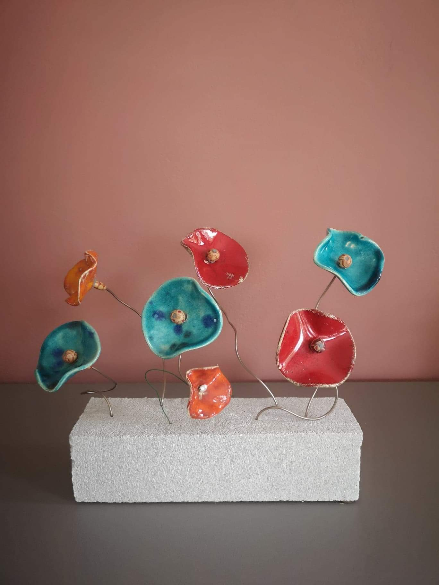
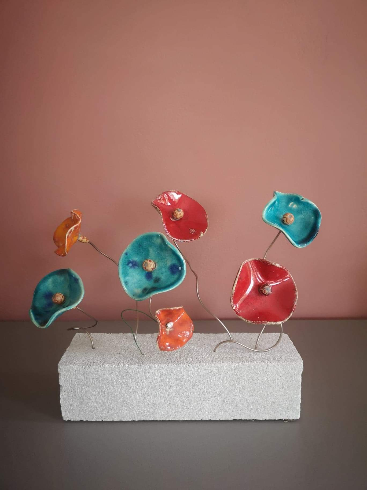

Qui sommes nous ?
Poterie Création est une association de poterie à but non lucratif qui réunit des passionnés d’art de la terre à Bruz. Ouverte à tous, notre association de poterie accueille amateurs et passionnés, débutants comme confirmés, dans un esprit d’échange et de solidarité. À travers des ateliers pour apprendre les différentes techniques de poterie, des formations et des événements, nous favorisons la transmission de techniques artisanales tout en cultivant des liens forts entre nos membres. Ici, pas de professeur ni de hiérarchie : c’est l’entraide et le partage des savoirs qui façonnent notre communauté. Chaque membre apporte ses idées, son expérience, et sa créativité, créant un espace où chacun progresse à son rythme, guidé par les autres.


 
